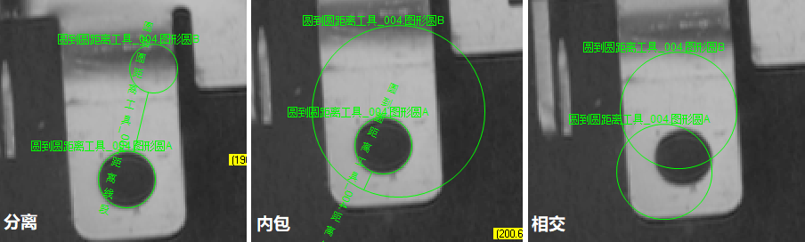
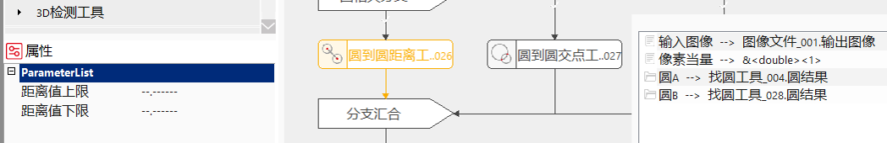
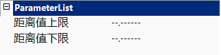
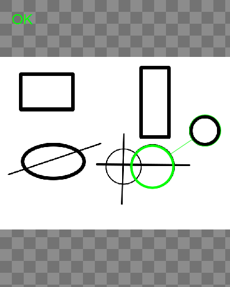
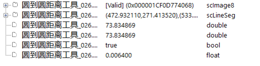

Công cụ khoảng cách từ hình tròn đến hình tròn chủ yếu dùng để tính khoảng cách vuông góc giữa hai hình tròn trên hình ảnh, và chuyển đổi khoảng cách trên hình ảnh sang khoảng cách thực tế. Lưu ý, khoảng cách này không phải là khoảng cách giữa hai tâm hình tròn.
Công cụ khoảng cách từ hình tròn đến hình tròn thích hợp cho việc đo khoảng cách giữa các vật thể hình tròn, ví dụ lỗ tròn, ốc, vòng dán, v.v.

Tính khoảng cách
1. Khi hai hình tròn tách rời:
2. Khi hai hình tròn cắt nhau:
3. Khi hình tròn 1 bao quanh hình tròn 2 (khoảng cách âm):


Giá trị khoảng cách tối đa, tối thiểu
Thiết lập phạm vi giá trị hợp lệ cho tham số đầu ra Khoảng cách. Phạm vi giá trị tối đa và tối thiểu là [-999999.999999, 999999.999999], có thể đặt là "–.——“" để không giới hạn giá trị tối đa hoặc tối thiểu.
Sau khi thiết lập phạm vi hợp lệ cho giá trị Khoảng cách, tiến hành thực hiện công cụ đo.
Khi kết quả đầu ra Khoảng cách nằm trong phạm vi hợp lệ, hiển thị công cụ thực thi thành công; ngược lại, hiển thị công cụ thực thi thất bại.


Không có
| Tên tham số | Giải thích tham số |
|---|---|
| Hình ảnh đầu vào | Hình ảnh dùng để đo khoảng cách từ hình tròn đến hình tròn. |
| Giá trị khoảng cách tối đa | Phạm vi [-999999.999999, 999999.999999], ngưỡng giá trị tối đa của tham số đầu ra khoảng cách. Khi khoảng cách lớn hơn giá trị này, công cụ thực thi thất bại. |
| Giá trị khoảng cách tối thiểu | Phạm vi [-999999.999999, 999999.999999], ngưỡng giá trị tối thiểu của tham số đầu ra khoảng cách. Khi khoảng cách nhỏ hơn giá trị này, công cụ thực thi thất bại. |
| Bù khoảng cách cố định | Bù cố định cho kết quả đo. Thường là 0, dùng để bù sai số hệ thống như tạo ảnh. |
| Bù hệ số khoảng cách | Bù hệ số cho kết quả đo. Thường là 1, dùng để bù sai số hệ thống như tạo ảnh. |
| Giá trị quy đổi pixel | Tỷ lệ chuyển đổi từ khoảng cách trên hình ảnh sang khoảng cách thực tế. |
| Hình tròn A | Hình tròn tham chiếu để tính khoảng cách. |
| Hình tròn B | Hình tròn tham chiếu để tính khoảng cách. |
| Giao diện nâng cao | Không có |
| Tên tham số | Giải thích tham số |
|---|---|
| Hình ảnh đầu vào | Chiều rộng, chiều cao và kích thước pixel của hình ảnh đầu ra. |
| Đoạn thẳng khoảng cách | Tọa độ điểm bắt đầu, điểm kết thúc và vector hướng của đoạn thẳng, hiển thị kết quả trong vùng tìm kiếm của hình ảnh. |
| Khoảng cách trên hình ảnh | Giá trị khoảng cách giữa hai điểm trên hình ảnh, đơn vị pixel. |
| Khoảng cách thực tế | Giá trị khoảng cách thực tế giữa hai điểm, đơn vị mm. |
| Kết quả thực thi | Kết quả thực thi công cụ: thành công hiển thị “OK”, thất bại hiển thị “NG”, giống với tham số kết quả trong cửa sổ giám sát. |
| Thời gian thực thi | Thời gian công cụ thực thi. |
参见“\Samples\形状间距及相关点.gvp”。